芽吹きの祈り唄 風に運ばれ紡がれる唄 それは どこかの時代 どこかの世界 一人の旅人の少女 幾重にも重なった木漏れ日の中に佇み 朽ち滅びた廃墟の広場で 希望の祈りを歌い続ける―― キボウ ゼツボウ 『＜お帰りなさい＞ そして ＜さようなら＞……』 木漏れ日の中に思い描く情景 森の中に埋もれた かつての繁栄の証 ここに生きていた人々は 今は何処で笑っているの？ ＜かつてここに生きていた記憶 胸に宿る誰かの笑顔＞ ここで仰ぎ見ていた空は どんな色をしていたの？ ＜時の彼方に追いやられた笑顔 思い出せない空の色＞ |
「そこに在る限り、世界は輪廻から逃れられない」 |
| 始まり 終わり 永遠に廻り続ける世界 繰り返される繁栄と衰退 喜び 悲しみ 永遠に巡り続ける時間 繰り返される希望と絶望 出会い 永遠の輪廻の中で、始まりは何度でも訪れるけれど 同じように 何度でも何度でも 別れ 衰退と悲しみ そして終わりは訪れるのに 輪廻から逃れられない人々は 何故 希望を歌い称えられるの？ そ ん な も の ＜希望と呼ばれる光＞は何処にあるの？ 何故 そんな儚いものを信じていられるの？ いつかは必ず 終焉に全てを奪われるというのに？ …誰か 教えて 全てを奪われてしまった私に―― 廃墟に散り行く 涙色の真珠の煌めき 時の経過の証 〝時を取り戻した〟一人の少女 崩れた街並み 優しく降り注ぐ＜森の木漏れ日＞ かつて繁栄を誇った街は 森の木々に覆われて 物語を知る者は今や残らず 全てを知る風の言葉は 少女の耳には届かない 希望を奪われ絶望に堕とされ それでもその闇の中から希望を求め続ける それは、一つの物語  《物語の始まり そして同時に訪れた彼女の終焉》 いにしえ …それは 古 の呪いの伝承 世界 記憶 …それは時と名前を奪われた一人の少女 空の蒼の中に閉じ込められて 月 太陽 沈んだ意識の底で 繰り返し繰り返し見送ったのは 幾万の白銀と黄金… ＜止まらない、世界における時間経過 動かない、少女における時間の流れ…＞ …幾万の銀と金に晒され 風化していく呪いの魔力 空 長い永い時を経て… …ついに少女は呪いから解放された しかし 彼女を待っていたのは… 〝少女を置き去りにした世界〟 そこにかつての面影は無く… お ぼ ろ げ な 彼女の知る世界は 幾万の昼夜と霧に霞む記憶の彼方 世界 茜色の空は、太陽が死んだ事を告げるかのように残酷に輝いていた… 記憶に刻まれていない 見知らぬ世界に放り出されて 少女は一人きり 呆然と立ち尽くした 希望は断たれたかのように思われた… …しかし 一 筋 の キ ボ ウ ＜脳裏に微かに残る残像＞に導かれ 永い長い旅路の果てに…少女は辿り着いてしまったのだ 廃墟 時の彼方で 彼女が生きていたその場所に…… そして 少女を支えていた最後の希望は 一瞬にして 少女を絶望の奈落へと突き落とす 絶叫 廃墟に響き渡る慟哭の唄 彼女を知る者は 彼女の帰りを待つモノは もう この世界には誰一人として存在しない 変わらないと信じていた空の蒼は少女を裏切った 〝 茜色を纏ったままの空〟 永遠だと思っていた夜空の星は少女を置き去りにした 〝見つからない北極星〟 愛していた故郷は 少女を待たずに朽ち果てていた 〝森の中に埋もれた廃墟〟 友人たち それでも只唯一 希望を掛けていた 宝物 は 呪い ＜時の流れ＞に抗うも押し流されて 少女の記憶からさえも拭い去られていたのだから… 〝…思い出せない誰かの笑顔〟 《後に、一人の吟遊詩人によって詠われる物語の序曲》 《残酷にも紡がれ続ける唄 希望を失った少女の歌声》 瞼の裏に残るのは澄み渡る蒼穹の色 世界は美しく輝いていて 無邪気な御伽噺に想いを寄せては 風と共に野を駆けていた 花を摘み、冠を作り 水に遊び、星を数えて 遠く霞む記憶の彼方 記憶 幼き頃の夢の幻 この世界は 希望と魔法と奇跡に満ち溢れていて みんな幸せになれるんだ 苦しみや悲しみを経ても 夢は願えば必ず叶うんだ…と 疑う事も知らずに信じていたあの頃 あまりにも眩し過ぎて 微かにしか思い出せないけれど …信じていたのに ……信じていたのに 嗚呼 私の生きていた世界は… こんなにも残酷なモノだったの？ この世に生まれたばかりの命が みな白く純粋で汚れなく 清らかで無邪気なように 遠い昔 幾万の時の彼方 私も紡いでいたの？ 希望に満ちた命の唄を もう そんな唄 何も思い出せないのに 信じていた その 希望の唄が輝くのなら ここに生きていた人々は 一体何処へ消えてしまったと言うの？ 嗚呼 この世が幸せだけで済むのなら 聞き手の心の内も解らぬままに紡がれた希望の歌や 無責任に紡がれる口先だけの優しい慰めの言葉で 苦しむ心が簡単に救われるのなら 涙色の海は生まれはしない…。 いず 初めから知っていたのなら 何れ裏切られると知っていたのなら 存在しないモノを 誰が私に信じさせたの？ こんなに傷つけられるのなら 初めから何も信じなかったのに… 信じたい いつか失くしてしまうのなら もう何も欲しいとは願わない…！ ……嗚呼… 私にはもう… 何も残されてはいない 全てを失い奪われ 全てのモノに裏切られ 絶望の奈落に堕ちた私は 何を信じれば良い？ …この世界に独りぼっちの私は 何に縋って 歩いていけば良い……？ 《朽ちてしまった廃墟のみを聞き手に、歌われた少女の絶望の慟哭》 《希望の存在意義 絶望の奈落へと唄われる想い》 森に埋もれた、石造りの廃墟の広場で―― ただ一人、帰る場所を失くして泣いている少女に宛てられた―― 風の歌声 森の囁き そして 誰かの祈り―― 『人は弱く そして儚い 光 暗闇の中では進めない 僕らは 道標が無くては前へ進めない…』 旅人 悲しみの中 渡り鳥を導く星座のように…暗い海を惑う船を導く灯台のように… 未来 洞穴の中で先を照らすランタンのように…迷い子を導く満月のように… レティア 『悲しみの海の中でも 友よ どうか光を失くさないで』 『沖の荒れた海の果てに 何かがある確証は無いけれど 何も無いという確証もまた 誰一人として得る事は出来ないのだから…』 風に乗って聞こえた歌は…空耳と言い切ればそれまでのモノ… 風に乗って聞こえた言葉は…耳を貸さなければそれきりの… 「希望を称える歌は時に… 光 希望を見失ってしまった迷い子の苦痛を増やすばかりの刃となる しかし…それでも希望を称える歌が世界から絶えないのは… キボウ …いつかその光が再び 彼らに舞い戻ることを願わずにはいられないから」 |
風に乗って聞こえた幻 だけど信じれば それはいつか真実へ… 道行く吟遊詩人は星に旅路を詠い 森の歌姫は風に祈りを託す 大地の指揮者は希望の羽音を祈り 空の楽団は〝希望となり得るモノ〟を奏で続ける… |
『人は儚く しかし強い レティア ごめんね 僕らの力は 君 の事を救えなかった レティア だけどせめて 時を越えて贈ろう…… 君 には届くと信じているから…』 だからどうか 君を導くこの光だけは 捨てないで 僕らには…君を救う力は無いけれど だけどせめて…悲しみの海を彷徨う君に いつか希望の光が舞い降りる事を この世に一人の者はいないのだからと 君が笑うまで祈り唄い続けよう……。 《ある種の幻想であり ある種の奇跡でもある それは 一つの祈り》 《廃墟に芽吹いた一厘の花 少女に差し込む一筋の光》 絶望の奈落へ堕とされた少女 彼女に向けられた祈りの花 微かに記憶に残る思い出の場所 希望の花 崩れた石と木々に埋もれた噴水の傍らに その蒼い花は咲いていた 喜び 悲しみ 悲しみ 喜び 始まりと終わりが対であるように 終わりと始まりもまた対の存在 光の無い場所に 影は生まれない…。 崩れ落ち崩壊した彼女の過去 けれど 滅びた街にもやがて花が芽吹くように 過去 光 砕けた大地の上に 太陽がある限り いつかそこには 空色の花が開くかもしれないから どうか旅人よ 悲しみと苦痛の海の中で 星を見失わないで 辛く長い道のりの中 倒れ伏して動けなくても いつかその痛みは去っていくから だけどどうか旅人よ …光を海に投げ入れないで 立ち上がり歩んだその先に 誰かが待っているかも知れないから どうか旅人よ忘れないで 耳を澄ませて たとえ聞こえなくても 微かな歌声でも 貴方に紡がれている歌が 空の風に託されていることを―― 祈り …聞こえないはずの幻を聞いた少女は 廃墟に芽吹いた小さな芽を抱きしめて 銀色の涙を零しながらも 過去 やがては きっと …廃墟に背を向けて 光の導く その彼方へ 例え全てを奪われても 例え夢を砕かれても 例え絶望に叩き堕とされても …どうか見失わないで その光がいつかきっと 何かを照らしてくれると信じて 信じるものが無いままで 人は前へ進むことは出来ないから 呪いの伝承 過去との別れ 終わった 始まり 始まった 終わり 過去 未 来 終わった物語 そして始まった新しい物語 もう一度信じたいと願うように 絶望の中にも光が差し込むことを祈るように 風に託され唄われ続ける希望は… …貴方へと 届いていますか ―――？ 《廃墟に芽吹いた一厘の花 その色はかつての空の色》 《歌い手不明 風に運ばれる詩篇の欠片》 …歩き出そう未来の果てへ 悲しみと喜びの渦巻く世界の中で 溺れてしまわないように 微かな光を胸に抱いて 誰かの祈りを風に感じて 何かがあっても 心が張り裂けても その先に待つ何かと 出会えるように 物語のようにはいかない きっと 光を見失うこともあるだろう だけどそうしたら もう一度探し出して抱きしめれば良い いつかきっと 光の導く先で 私達は巡り会える 悲しみに呑み込まれたとしても それでも星に恋焦がれて 折れてしまった翼でも 羽ばたき続ければ きっと きっと 星の翼は 私達に舞い降りてくれるから 未来への小さな希望を交えながら 今貴方へと紡ぐ この光の歌を…… 私達の命の旅路に祝福を 絶望を経てもいつの日か 希望の光の羅針盤に導かれ どこかで巡り会えるように…… 《…宛て先不明 風に託された貴方への歌物語》 Fin ２００７年 文藝部誌「游」 卒業の号掲載 |